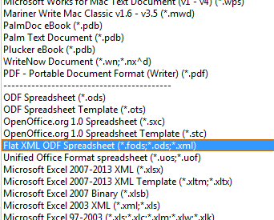
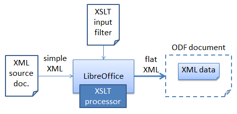
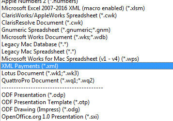
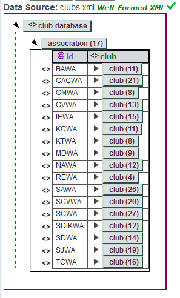
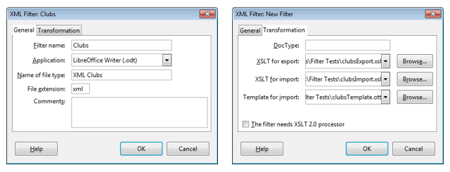
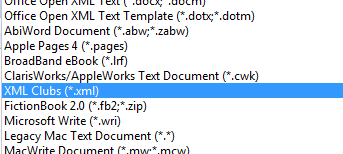
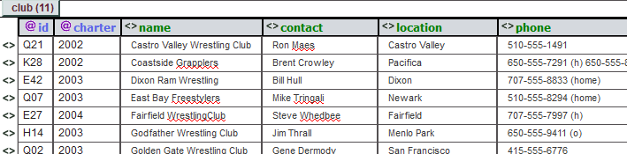
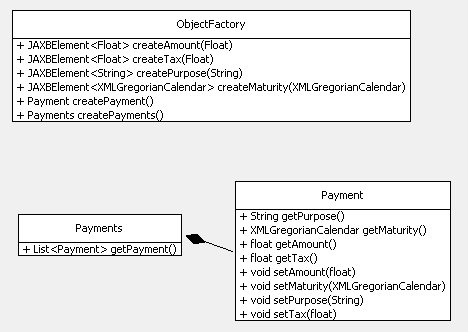
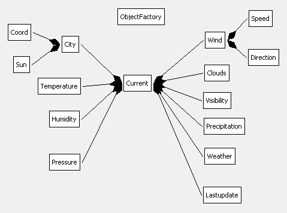

Chapter 50. Importing XML¶
Topics
XSLT Filters; Using Filters with Java; Alternatives to XSLT Filters: DOM Parsing, Node and Attribute Data Extraction, JAXB Conversion
Example folders: "Filter Tests" and "Utils"
This chapter is mostly about importing XML data into Office. I start by looking at XSLT import (and export) filters, which give the best results but require the programmer to know a great deal about XML and the ODF file format.
The second half of the chapter is about three simpler techniques for importing XML which require less comprehensive XML skills and no knowledge of ODF. The drawback is that the resulting document may be less 'beautiful', often requiring some manual post-processing to remove unnecessary white space and data.
You'd be correct in thinking that Office can already import XML, but you may be disappointed with the results: a simple XML file, such as pay.xml shown below, is imported unchanged, as plain text:
<?xml version="1.0"?>
<payments>
<payment>
<purpose>CD</purpose>
<amount>12.95</amount>
<tax>19.1234</tax>
<maturity>2008-03-01</maturity>
</payment>
<payment>
<purpose>DVD</purpose>
<amount>19.95</amount>
<tax>19.4321</tax>
<maturity>2008-03-02</maturity>
</payment>
<payment>
<purpose>Clothes</purpose>
<amount>99.95</amount>
<tax>18.5678</tax>
<maturity>2008-03-03</maturity>
</payment>
<payment>
<purpose>Book</purpose>
<amount>9.49</amount>
<tax>18.9876</tax>
<maturity>2008-03-04</maturity>
</payment>
</payments>
Office offers many ways of loading XML through the "All files (.)" popdown list in the Open dialog. Figure 1 shows my selection of "Flat XML ODF Spreadsheet":

Figure 1. Selecting an XML Import Format.
Unfortunately, the result isn't a nice spreadsheet of the payments, but a Writer document containing all the data and XML tags.
Flat XML is for encoding an OpenDocument format (ODF) document as a single text file, which contrasts with how it's usually stored as a zipped folder of several files and sub-folders. pay.xml isn't a Flat XML file, and so Office drops back to treating it as plain text, and uses Writer to display it.
Incidentally, there are several Flat XML formats aimed at the different Office applications, Writer, Calc, Draw, and Impress.
1. Filters to the Rescue¶
pay.xml can be opened as a spreadsheet with the help of an input filter. There are a few ways of writing these, as explained by Fridrich Strba in his blog post "Extending the Swiss Army knife - an overview about writing of filters for LibreOffice" (http://fridrich.blogspot.com/2013/08/extending-swiss-army-knife-overview.html).
The easiest way of implementing an XML input filter is with XSLT (eXtensible Stylesheet Language: Transformations). The filter is utilized by the XSLT processor inside Office to load and transform the XML, as illustrated in Figure 2.

Figure 2. Using an XSLT filter.
XSLT is designed for transforming XML into other textual formats; in this case, it will convert the simple XML used by pay.xml into the Flat XML used by Calc.
Office's XSLT processor used to be Saxon (http://saxon.sourceforge.net/), a Java API, but was replaced in 2012 by the libxslt C library (http://xmlsoft.org/libxslt/). This implements XSLT 1.0 with some extensions, so it's best to avoid using features from the newer XSLT 2.0.
One source for learning XLST in the context of ODF is:
OASIS OpenDocument Essentials J. David Eisenberg, 2005 http:// books.evc-cit.info/ The book includes a chapter on filters, and an appendix that overviews XSLT and XPath (XPath is used for locating parts of the input document for processing).
Eisenberg's website has a free draft of the text, and all the examples and support code. The site often seems to be offline, but the book can be found elsewhere, including at Lulu: http://www.lulu.com/shop/j-david-eisenberg/oasis-opendocument-essentials/paperback/product-392512.html
If you feel the need for more information on XSLT, a good text by the developer of Saxon is:
XSLT 2.0 and XPath 2.0 Programmer's Reference Michael Kay Wrox Pub., May 2008, 4th Ed.
There's a somewhat shorter XSLT tutorial at W3Schools: http://www.w3schools.com/xml/xsl_intro.asp
A useful forum post, "Create XSLT filters for import and export" (https://forum.openoffice.org/en/forum/viewtopic.php?t=3490), by user hol.sten contains XSLT import and export filters for pay.xml (in fact, it's his example). The filters are installed via Office's Tools > "XML Filter Settings" menu item. Clicking on the "New" button of the filter settings window brings up a dialog containing two tabs shown in Figure 3.

Figure 3. The XML Filter Settings Dialog Tabs.
Figure 3 shows that I've created a "Pay" filter set containing hol.sten's import and export filters stored in payImport.xsl and payExport.xsl. The import filter will convert XML to Flat XML for Calc, as stated in the "Application" field of the General tab.
After clicking "Ok", the Pay filter set is added to the settings window in Figure 4.

Figure 4. The Pay Filter in the Settings Window.
When pay.xml is opened, the Pay import filter appears in the Calc section of the "All Files (.) popdown list, as seen in Figure 5.

Figure 5. The Calc Pay Import Filter.
The "XML Payments" text in Figure 5 comes from the "Name of file type" textfield in the General tab of the dialog in Figure 3.
The resulting Calc document is shown in Figure 6.

Figure 6. Pay.xml Imported as a Spreadsheet.
1.1. The Clubs Example¶
There's another nice XSLT import and export filter set in chapter 9 of Eisenberg's book. clubs.xml consists of a sequence of associations, each one made up of a sequence of clubs. A typical club entry looks like:
<club id="Q21" charter="2002">
<name>Castro Valley Wrestling Club</name>
<contact>Ron Maes</contact>
<location>Castro Valley</location>
<phone>510-555-1491</phone>
<email>cvwcron@example.com</email>
<age-groups type="KCJOW"/>
<info>Practices every Tuesday and Thursday at 5:00 P.M.
at Castro Valley High School mat room.</info>
</club>
A helpful way of visualizing this information is with the XML editor at http://xmlgrid.net/, which renders it as in Figure 7.

Figure 7. Visualization of clubs.xml.
There are 17 associations; the first is called "BAWA" and contains 11 clubs Eisenberg's clubsImport.xsl and clubsExport.xsl filters are imported into Office using the "XML Filter Settings" dialog in Figure 8.

Figure 8. The XML Filter Settings Dialog Again.
I've called the filter set "Clubs", and it uses clubsImport.xsl to produce Flat XML for Writer. There's also a Writer template called clubsTemplate.ott, which applies styles to the imported data.
When clubs.xml is opened, the Clubs import filter appears in the Writer section of the "All Files (.) popdown list, as in Figure 9.

Figure 9. The Writer Clubs Import Filter.
The start of the resulting Writer document looks like Figure 10.

Figure 10. Clubs.xml as a Writer Document.
1.2. Command Line Importing (and Exporting)¶
Import filter selection can be time-consuming because of the large number listed in "Open"s popdown list. A quicker approach is to call Office from the command line, supplying the filename and filter name as arguments.
Most of Office's command line arguments are listed at https://help.libreoffice.org/Common/Starting_the_Software_With_Parameters, and a few others when office.exe is invoked with the -h option. The filter commands are -- infilter and --convert-to, which I've wrapped up in two batch scripts called infilter.bat and convert.bat.
The hardest part of using these commands is the need to supply a filter name, which corresponds to the "Filter name" textfield string in the General tab of the XML Filter Settings dialog. The pay.xml import filter is "Pay", as shown in the left hand window in Figure 3; the clubs.xml filter is "Clubs", as in Figure 8.
The infilter.bat script takes a filename and input filter name argument:
infilter pay.xml "Pay"
This causes Office to open pay.xml using the "Pay" import filter, creating the spreadsheet shown in Figure 6.
The convert.bat script takes an Office filename and conversion string as arguments. In the simple case, the string is the extension of the exported file. For example, the following exports the Writer document as XML:
convert simpleText.odt xml
If there are several filters to choose from (as there are for XML), then the default one is used; for this example the Flat XML exporter for Writer will be employed. If a different export filter is required then its name must be appended to the conversion string after a ":". For instance:
convert payment.ods "xml:Pay"
This exports the payments spreadsheet using the "Pay" filter, resulting in a file called payment.xml which has the same format as the original example at the start of the chapter.
1.3. Finding a Filter Name¶
The calls to infilter.bat and convert.bat rely on the user knowing a filter's name (e.g.
"Pay" or "Clubs"). I knew these because I installed them, but what about the names of other filters in Office?
A list of filters present in OpenOffice in 2007 can be found at https://wiki.openoffice.org/wiki/Framework/Article/Filter/FilterList_OOo_3_0. However, a better approach is to call my FiltersInfo.java example which prints all the filters currently installed in Office, and some extra details about the "AbiWord", "Pay", and "Clubs" filters:
// in FiltersInfo.java
public class FiltersInfo
{
public static void main(String[] args)
{
XComponentLoader loader = Lo.loadOffice();
// print the names of all the filters in Office
String[] filterNms = Info.getFilterNames();
System.out.println("Filter Names");
Lo.printNames(filterNms, 3);
// print some extra info on 3 filters
PropertyValue[] props = Info.getFilterProps("AbiWord");
Props.showProps("AbiWord Filter", props);
props = Info.getFilterProps("Pay");
Props.showProps("Pay Filter", props);
props = Info.getFilterProps("Clubs");
Props.showProps("Clubs Filter", props);
int flags = (int) Props.getValue("Flags", props);
System.out.println("Filter flags: " +
Integer.toHexString(flags));
System.out.println(" Import: " + Info.isImport(flags));
System.out.println(" Export: " + Info.isExport(flags));
Lo.closeOffice();
} // end of main()
} // end of FiltersInfo class
The output from FiltersInfo starts with a long list of filter names:
Filter Names
No. of names: 235
"AbiWord" "Apple Keynote" "Apple Numbers"
"Apple Pages" "BMP - MS Windows" "BroadBand eBook"
"Calc MS Excel 2007 Binary" "Calc MS Excel 2007 VBA XML"
:
"ClarisWorks_Draw" "ClarisWorks_Impress" "Clubs"
:
"Palm_Text_Document" "PalmDoc" "Pay"
:
:
"XHTML Draw File" "XHTML Impress File" "XHTML Writer File"
"XPM"
In the above list, I've included the lines that include the "Pay" and "Clubs" filter names.
The names are obtained by Info.getFilterNames(), which utilizes the FilterFactory service:
// in the Info class
public static String[] getFilterNames()
{
XNameAccess na = Lo.createInstanceMCF(XNameAccess.class,
"com.sun.star.document.FilterFactory");
if (na == null) {
System.out.println("No Filter factory found");
return null;
}
else
return na.getElementNames();
} // end of getFilterNames()
Sometimes it's useful to know more about a filter than just it's name, such as whether it's for importing, exporting, or both. Additional information is available as an array of properties, by calling Info.getFilterProps() with the filter's name:
// in the Info class
public static PropertyValue[] getFilterProps(String filterNm)
{
XNameAccess na = Lo.createInstanceMCF(XNameAccess.class,
"com.sun.star.document.FilterFactory");
if (na == null) {
System.out.println("No Filter factory found");
return null;
}
else {
try {
return (PropertyValue[]) na.getByName(filterNm);
}
catch(Exception e) {
System.out.println("Could not find filter for " + filterNm);
return null;
}
}
} // end of getFilterProps()
getFilterProps() is called three times in FiltersInfo.java to retrieve details about the "AbiWord", "Pay", and "Clubs" filters. The output for "Clubs" is:
Properties for "Clubs Filter":
UserData: [com.sun.star.documentconversion.XSLTFilter, false,
com.sun.star.comp.Writer.XMLOasisImporter,
com.sun.star.comp.Writer.XMLOasisExporter,
file:///C:/Users/Dell/Desktop/LibreOffice%20Tests/Filter%20Tests/club
sImport.xsl,
file:///C:/Users/Dell/Desktop/LibreOffice%20Tests/Filter%20Tests/club
sExport.xsl, , ]
TemplateName:
file:///C:/Users/Dell/AppData/Roaming/LibreOffice/4/user/template/Clu
bs/clubsTemplate.ott
Name: Clubs
Type: Clubs
UIComponent:
FileFormatVersion: 0
FilterService: com.sun.star.comp.Writer.XmlFilterAdaptor
DocumentService: com.sun.star.text.TextDocument
Flags: 524355
UINames: [ en-US = XML Clubs ]
UIName: XML Clubs
Finalized: false
Mandatory: false
The UserData and TemplateName properties indicate that "Clubs" contains an import and export filter for Writer's Flat XML, and also a template.
Filter properties are explained in the online documentation for the FilterFactory
service (use lodoc FilterFactory to access it), and also in the "Properties of a
Filter" subsection of the "Integrating Import and Export Filters" section of chapter 6
of the Developer's Guide (online at:
https://wiki.openoffice.org/wiki/Documentation/DevGuide/OfficeDev/Properties_of_a_Filter,
or use loGuide "Properties of a Filter").
The most cryptic of the properties is the filter flags integer (524355 in the example above). It's actually a collection of bitwise OR'ed hexadecimals, and FiltersInfo.java shows how they can be accessed:
// part of FiltersInfo.java...
int flags = (int) Props.getValue("Flags", props);
System.out.println("Filter flags: " + Integer.toHexString(flags));
// print as a hexadecimal string
System.out.println(" Import: " + Info.isImport(flags));
System.out.println(" Export: " + Info.isExport(flags));
The output is:
Filter flags: 80043
Import: true
Export: true
The hexadecimals that might appear in the flag are listed in the online "Properties of a Filter" subsection (https://wiki.openoffice.org/wiki/Documentation/DevGuide/OfficeDev/Properties_of_a_Filter). I've included a few isXXX() methods in the Info utilities class for testing for their presence. The above example reports that the "Clubs" filter contains both an import and export filter.
2. Using Filters with Java¶
Java contains an assortment of XML processing capabilities, grouped under the JAXP (Java API for XML Processing) heading. They include DOM and SAX parsing, XML schema validation, and XSLT transformation. The JDK's XSLT processor is Xalan (https://xml.apache.org/xalan-j/), which supports XSLT 1.0, and so is roughly equivalent to Office's libxslt library. This means that I can use the "Pay" and "Clubs" filters outside of Office by passing them to Java's Xalan processor.
There's a lot of information about JAXP online, including in Oracle's tutorial at https://docs.oracle.com/javase/tutorial/jaxp/. Also "XSLT 2.0 and XPath 2.0 Programmer's Reference" by Michael Kay, which I mentioned earlier, includes an appendix on JAXP.
2.1. Importing XML with Java¶
My ApplyInFilter.java example converts an XML file into an Office document in two steps. First it uses an XSLT import filter to generate Flat XML which it saves to a temporary file. The program then loads that file into Office with one of its Flat XML filters. The correct one is chosen by looking at the filename extension supplied for the final document. For example:
run ApplyInFilter pay.xml payImport.xsl payment.ods
pay.xml is transformed into Flat XML with payImport.xsl. Office isn't used since Java's XSLT processor is sufficient. However, at the next step the temporary file is loaded using Office's "Flat XML for Spreadsheets" filter. This filter is selected by noting the "ods" extension of payment.ods.
Another example:
run ApplyInFilter clubs.xml clubsImport.xsl clubs.odt
This converts clubs.xml into a Writer document stored in clubs.odt using the "Clubs" import filter. ApplyInFilter.java doesn't support templates, so the data saved to clubs.odt isn't nicely formatted like Figure 10.
The ApplyInFilter program:
public class ApplyInFilter
{
public static void main(String[] args)
{
if (args.length != 3) {
System.out.println("Usage: java ApplyInFilter
<XML fnm> <Flat XML import filter> <new ODF>");
return;
}
// convert the data to Flat XML
String xmlStr = XML.applyXSLT(args[0], args[1]);
if (xmlStr == null) {
System.out.println("Filtering failed");
return;
}
// save flat XML data in a temp file
String flatFnm = FileIO.createTempFile("xml");
FileIO.saveString(flatFnm, xmlStr);
XComponentLoader loader = Lo.loadOffice();
// get the type of the output file
String odfFnm = args[2];
String docType = Lo.ext2DocType( Info.getExt(odfFnm));
System.out.println("Doc type: " + docType);
// open temp file using the correct Flat XML filter
XComponent doc = Lo.openFlatDoc(flatFnm, docType, loader);
if (doc == null)
System.out.println("Document creation failed");
else {
GUI.setVisible(doc, true);
Lo.waitEnter();
Lo.saveDoc(doc, odfFnm);
Lo.closeDoc(doc);
}
Lo.closeOffice();
} // end of main()
} // end of ApplyInFilter class
Java's XSLT processor is called by XML.applyXSLT():
// in the XML class
public static String applyXSLT(String xmlFnm, String xslFnm)
{
try {
TransformerFactory tf = TransformerFactory.newInstance();
Source xslt = new StreamSource(new File(xslFnm));
Transformer t = tf.newTransformer(xslt);
System.out.println("Applying filter " + xslFnm +
" to " + xmlFnm);
Source text = new StreamSource(new File(xmlFnm));
StreamResult result = new StreamResult(new StringWriter());
t.transform(text, result);
return result.getWriter().toString();
}
catch(Exception e)
{ System.out.println("Unable to transform " + xmlFnm +
" with " + xslFnm);
System.out.println(" " + e);
return null;
}
} // end of applyXSLT()
The resulting Flat XML is saved to a temporary file by ApplyInFilter.java, and then the document type of the output file is obtained:
// part of ApplyInFilter.java...
String docType = Lo.ext2DocType( Info.getExt(odfFnm));
The docType string is "scalc" when the ODT file is payment.ods, and "swriter" for clubs.odt.
Lo.openFlatDoc() uses the document type to select the correct Flat XML filter, and passes it to Lo.openDoc() as the "FilterName" property:
// in the Lo class
public static XComponent openFlatDoc(String fnm, String docType,
XComponentLoader loader)
{ String nm = XML.getFlatFilterName(docType);
return openDoc(fnm, loader, Props.makeProps("FilterName", nm));
}
XML.getFlatFilterName() maps a document type to an appropriate Flat XML filter name:
// in the XML class
public static String getFlatFilterName(String docType)
{
if (docType == Lo.WRITER_STR)
return "OpenDocument Text Flat XML";
else if (docType == Lo.CALC_STR)
return "OpenDocument Spreadsheet Flat XML";
else if (docType == Lo.DRAW_STR)
return "OpenDocument Drawing Flat XML";
else if (docType == Lo.IMPRESS_STR)
return "OpenDocument Presentation Flat XML";
else {
System.out.println("No Flat XML filter for this
document type; using Flat text");
return "OpenDocument Text Flat XML";
}
} // end of getFlatFilterName()
2.2. Exporting XML with Java¶
My ApplyOutFilter.java example saves the specified document in Flat XML form to a temporary file. Then it applies an XSLT output filter to transform it into simple XML, which is saved in a new file. For example:
run ApplyOutFilter payment.ods payExport.xsl payEx.xml
payment.ods contains the spreadsheet shown in Figure 6, and the transformation fills payEx.xml with text almost identical to that on the first page of the chapter.
Another example:
run ApplyOutFilter clubs.odt clubsExport.xsl clubsEx.xml
clubs.odt must contain data formatted by the clubs template (i.e. like the example in Figure 10). This is necessary because clubsExport.xsl utilizes paragraph styles to decide how to change the text.
I had to slightly modify the style names used in Eisenberg's export filter. He utilized names containing spaces (e.g. "Club Name", "Club Code", "Age Groups", and "Club Info"), but Office automatically changes spaces inside names to "20". So I had to change the XSLT rules to refer to these names (i.e. "Club_20_Name", "Club_20_Code", "Age_20_Groups", and "Club_20_Info").
The ApplyOutFilter program:
public class ApplyOutFilter
{
public static void main(String[] args)
{
if (args.length != 3) {
System.out.println("Usage: java ApplyOutFilter <XML file>
<Flat XML export filter> <new XML file>");
return;
}
XComponentLoader loader = Lo.loadOffice();
XComponent doc = Lo.openDoc(args[0], loader);
if (doc == null) {
System.out.println("Could not open document: " + args[0]);
Lo.closeOffice();
return;
}
// save flat XML data
String flatFnm = FileIO.createTempFile("xml");
Lo.saveDoc(doc, flatFnm);
Lo.closeDoc(doc);
// use XSLT to convert Flat XML into simple XML
String filteredXML = XML.applyXSLT(flatFnm, args[1]);
if (filteredXML == null)
System.out.println("Filtering failed");
else {
// indent, print, and save
String xmlStr = XML.indent2Str(filteredXML);
System.out.println(xmlStr);
FileIO.saveString(args[2], xmlStr);
}
Lo.closeOffice();
} // end of main()
} // end of ApplyOutFilter class
At the end of ApplyOutFilter.java, the XML text in xmlStr is indented and printed. The indention is carried out by XML.indent2Str() which calls XML.applyXSLT2str() with an indenting transformation loaded from indent.xsl:
// in the XML class
// global
private static final String INDENT_FNM = "indent.xsl";
// for indenting XML tags, and adding newlines between tags
public static String indent2Str(String xmlStr)
{ return applyXSLT2str(xmlStr,
FileIO.getUtilsFolder()+INDENT_FNM);
}
applyXSLT2str() is a variant of XML.applyXSLT() which reads XML from a string rather than a file.
3. Alternatives to XSLT Filters¶
The obvious drawback of the XSLT filter approach is that filter writing requires the programmer to be knowledgable about XSLT, XPath, and the details of the Flat XML format.
Another way to write import and export filter is to utilize the ImportFilter and ExportFilter services in the com.sun.star.document module, which are shown in Figure 11.

Figure 11. The ImportFilter and ExportFilter Services.
These services allow the implementation of non-XML based transformations by utilizing the ImportFilter and ExportFilter services rather than their XMLImportFilter and XMLExportFilter subclasses. The subclasses employ SAX, an event-driven way of parsing XML.
If you're interested in using ImportFilter and ExportFilter, the Developer's guide gives some details in the "Integrating Import and Export Filters" section of chapter 6 on "Office Development". The information is also online, starting at https://wiki.openoffice.org/wiki/Documentation/DevGuide/OfficeDev/Integrating_Import_and_Export_Filters, or use loGuide "Import and Export Filters".
But I'm not going to use these services due to their complexity, and I'm about to stop using XSLT as well. Instead I'm going to look at three easier ways to import XML into Office:
- Data extraction by DOM parsing;
- Node and attribute data extraction as labeled strings;
- JAXB conversion of XML to Java objects.
The drawback of these simpler approaches is that the imported data will usually need some post-processing to make it look as good as import filter results.
3.1. Data Extraction by DOM Parsing¶
Document Object Model (DOM) parsing converts an XML document into a tree of nodes; the three main types are:
- Elements;
- Attributes;
- The data/values held by the elements and attributes.
The DOM API is quite low-level, supporting functions such as getFirstChild() and getNextSibling() in Java's Node class. This motivated the introduction of XPath, and other tree models such as JDOM. Fortunately, I won't be needing those more advanced features.
Nodes are found by searching for their name. When a possible match is discovered, the node's children usually need to be examined to determine the node type. For instance, node data has the type Node.TEXT_NODE, while an attribute has the type Node.ATTRIBUTE.
There are many online tutorials on Java and DOM, such as Oracle's at https://docs.oracle.com/javase/tutorial/jaxp/dom. Two other good ones are mkyong's starting at http://www.mkyong.com/tutorials/java-xml-tutorials/ and "Easy DOM Parsing in Java" by Eric Bruno at http://www.drdobbs.com/jvm/easy-dom-parsing-in-java/231002580. I've 'borrowed' some of Bruno's DOM functions for my XML.java support class, and his company.xml example.
A textbook on Java and XML:
Pro XML Development with Java Technology Ajay and Deepak Vohra Apress, 2006
The company.xml file contains details about three companies:
<?xml version="1.0" encoding="UTF-8" ?>
<Companies>
<Company>
<Name>ABC</Name>
<Executive type="CEO">
<LastName>Smith</LastName>
<FirstName>Jim</FirstName>
<street>123 Broad Street</street>
<city>Manchester</city>
<state>Cheshire</state>
<zip>11234</zip>
</Executive>
</Company>
<Company>
<Name>NBC</Name>
<Executive type="President">
<LastName>Jones</LastName>
<FirstName>Lucy</FirstName>
<street>23 Bradford St</street>
<city>Asbury</city>
<state>Lincs</state>
<zip>33451</zip>
</Executive>
</Company>
<Company>
<Name>BBC</Name>
<Executive type="Boss">
<LastName>Singh</LastName>
<FirstName>Oxley</FirstName>
<street>16d Towers</street>
<city>Wimbledon</city>
<state>London</state>
<zip>77392</zip>
</Executive>
</Company>
</Companies>
When writing DOM code, it helps to visualize its structure. One way is to load the file into the editor at http://xmlgrid.net/, which displays the tree-like structure in Figure 12.

Figure 12. The Tree Structure of company.xml.
Clicking on the arrow heads expand or contract the tree view.
My ExamineCompany.java example loads this data as a DOM tree, and extracts various information:
// in ExamineCompany.java
public class ExamineCompany
{
public static void main(String[] args) throws Exception
{
Document doc = XML.loadDoc("company.xml");
NodeList root = doc.getChildNodes(); // get the document's root
// move down the tree to the executive in the first company node
Node comps = XML.getNode("Companies", root);
Node comp = XML.getNode("Company", comps.getChildNodes());
Node exec = XML.getNode("Executive", comp.getChildNodes());
// print the executive's data
String execType = XML.getNodeAttr("type", exec);
NodeList exNodes = exec.getChildNodes();
String lastName = XML.getNodeValue("LastName", exNodes);
String firstName = XML.getNodeValue("FirstName", exNodes);
String street = XML.getNodeValue("street", exNodes);
String city = XML.getNodeValue("city", exNodes);
String state = XML.getNodeValue("state", exNodes);
String zip = XML.getNodeValue("zip", exNodes);
System.out.println(execType);
System.out.println(lastName + ", " + firstName);
System.out.println(street);
System.out.println(city + ", " + state + " " + zip);
// get all the data in the tree for a given node/tag name
NodeList lnNodes = doc.getElementsByTagName("LastName");
ArrayList<String> lastnames = XML.getNodeValues(lnNodes);
System.out.println("All lastnames:");
for(String lastname: lastnames)
System.out.println(" " + lastname);
} // end of main()
} // end of ExamineCompany class
The program outputs details about the first company, and the lastnames of all the company bosses:
CEO
Smith, Jim
123 Broad Street
Manchester, Cheshire 11234
All lastnames:
Smith
Jones
Singh
XML.getNode() searches through a list of nodes, and returns the first with the specified tag name:
// in the XML class
public static Node getNode(String tagName, NodeList nodes)
{
for (int i = 0; i < nodes.getLength(); i++) {
Node node = nodes.item(i);
if (node.getNodeName().equalsIgnoreCase(tagName))
return node;
}
return null;
} // end of getNode()
XML.getNodeValue() looks for a node in a list based on its tag name, and extracts the data stored beneath that node.
// in the XML class
public static String getNodeValue(String tagName, NodeList nodes)
{
if (nodes == null)
return "";
for (int i = 0; i < nodes.getLength(); i++) {
Node n = nodes.item(i);
if (n.getNodeName().equalsIgnoreCase(tagName))
return getNodeValue(n);
}
return "";
} // end of getNodeValue()
The second version of XML.getNodeValue() retrieves the text from a node's TEXT_NODE child (if there is one):
// in the XML class
public static String getNodeValue(Node node)
{
if (node == null)
return "";
NodeList childNodes = node.getChildNodes();
for (int i = 0; i < childNodes.getLength(); i++) {
Node n = childNodes.item(i);
if (n.getNodeType() == Node.TEXT_NODE)
return n.getNodeValue().trim();
}
return "";
} // end of getNodeValue()
XML.getNodeValues() constructs a list of the data stored in all the supplied nodes:
// in the XML class
public static ArrayList<String> getNodeValues(NodeList nodes)
{
if (nodes == null)
return null;
ArrayList<String> vals = new ArrayList<String>();
for (int i = 0; i < nodes.getLength(); i++) {
String val = getNodeValue(nodes.item(i));
if (val != null)
vals.add(val);
}
return vals;
} // end of getNodeValues()
XML.getNodeAttr() extracts data from a node's attribute:
// in the XML class
public static String getNodeAttr(String attrName, Node node)
{
if (node == null)
return "";
NamedNodeMap attrs = node.getAttributes();
if (attrs == null)
return "";
for (int i = 0; i < attrs.getLength(); i++) {
Node attr = attrs.item(i);
if (attr.getNodeName().equalsIgnoreCase(attrName))
return attr.getNodeValue().trim();
}
return "";
} // end of getNodeAttr()
Converting XML to Spreadsheet Data It's fairly easy to map XML data into a spreadsheet format of rows and columns.
Consider pay.xml from earlier:
<?xml version="1.0"?>
<payments>
<payment>
<purpose>CD</purpose>
<amount>12.95</amount>
<tax>19.1234</tax>
<maturity>2008-03-01</maturity>
</payment>
<payment>
<purpose>DVD</purpose>
<amount>19.95</amount>
<tax>19.4321</tax>
<maturity>2008-03-02</maturity>
</payment>
<payment>
<purpose>Clothes</purpose>
<amount>99.95</amount>
<tax>18.5678</tax>
<maturity>2008-03-03</maturity>
</payment>
<payment>
<purpose>Book</purpose>
<amount>9.49</amount>
<tax>18.9876</tax>
<maturity>2008-03-04</maturity>
</payment>
</payments>
It can be viewed as a sequence of payment objects, each containing four fields (purpose, amount, tax, and maturity). Each payment object can be mapped to a spreadsheet row, and its fields to four columns in that row. This format can be represented by a 2D array, which is easily constructed using the DOM API.
My CreatePay.java example utilizes XML.getAllNodeValues() to build a 2D array from the pay.xml data, and calls Calc.setArray() to add the data to a new Calc document:
// in CreatePay.java
public class CreatePay
{
public static void main(String args[])
{
Document xdoc = XML.loadDoc("pay.xml");
NodeList pays = xdoc.getElementsByTagName("payment");
if (pays == null)
return;
Object[][] data = XML.getAllNodeValues(pays,
new String[]{"purpose", "amount", "tax", "maturity"});
Lo.printTable("payments", data);
XComponentLoader loader = Lo.loadOffice();
XSpreadsheetDocument doc = Calc.createDoc(loader);
if (doc == null) {
System.out.println("Document creation failed");
Lo.closeOffice();
return;
}
GUI.setVisible(doc, true);
XSpreadsheet sheet = Calc.getSheet(doc, 0);
Calc.setArray(sheet, "A1", data);
// Lo.saveDoc(doc, "payCreated.ods");
Lo.waitEnter();
Lo.closeDoc(doc);
Lo.closeOffice();
} // end of main()
} // end of CreatePay class
The list of payment nodes is obtained using:
// part of CreatePay.java...
NodeList pays = xdoc.getElementsByTagName("payment");
The 2D array of payment data is constructed by:
// part of CreatePay.java...
Object[][] data = XML.getAllNodeValues(pays,
new String[]{"purpose", "amount", "tax", "maturity"});
The first argument of getAllNodeValues() is the list of nodes to be scanned, and the second parameter is an array of tag names. The named nodes are assumed to be children of each node in the list, and their data becomes one row in the 2D array. The method's code:
// in the XML class
public static Object[][] getAllNodeValues(NodeList rowNodes,
String[] colIDs)
{ int numRows = rowNodes.getLength();
int numCols = colIDs.length;
Object[][] data = new Object[numRows+1][numCols];
// put column names in first row of array
for (int col = 0; col < numCols; col++)
data[0][col] = Lo.capitalize( colIDs[col]);
for (int i = 0; i < numRows; i++) {
// extract column data for ith row
NodeList colNodes = rowNodes.item(i).getChildNodes();
for (int col = 0; col < numCols; col++)
data[i+1][col] = getNodeValue(colIDs[col], colNodes);
}
return data;
} // end of getAllNodeValues()
XML.getAllNodeValues() also adds a header row to the array made up of the tag names.
The resulting table is printing by Lo.printTables():
-- payments ----------------
Purpose Amount Tax Maturity
CD 12.95 19.1234 2008-03-01
DVD 19.95 19.4321 2008-03-02
Clothes 99.95 18.5678 2008-03-03
Book 9.49 18.9876 2008-03-04
-----------------------------
Calc.setArray() adds the table to the spreadsheet, which ends up like Figure 13.

Figure 13. The Spreadsheet Generated by CreatePay.java.
XML.getAllNodeValues() doesn't always produce such good results, as illustrated by the CreateAssoc.java example which converts part of clubs.xml into a spreadsheet.
As explained earlier, clubs.xml consists of a sequence of associations, with each one made up of a sequence of clubs. The most natural spreadsheet mapping would be to assign each association to its own sheet, and convert each club into a row on that sheet.
A club consists of seven elements and two attributes, as seen in the following example:
<club id="Q21" charter="2002">
<name>Castro Valley Wrestling Club</name>
<contact>Ron Maes</contact>
<location>Castro Valley</location>
<phone>510-555-1491</phone>
<email>cvwcron@example.com</email>
<age-groups type="KCJOW"/>
<info>Practices every Tuesday and Thursday at 5:00 P.M.
at Castro Valley High School mat room.</info>
</club>
Probably the best spreadsheet representation would be to use nine columns, so the attributes could be listed. This approach is employed by the xmlgrid.net website as shown in Figure 14.

Figure 14. Part of the Clubs Information.
Unfortunately, XML.getAllNodeValues() as currently coded doesn't extract attribute information, so the id and charter data will be missed.
The CreateAssoc.java example loads clubs.xml, and selects the first association. Its list of clubs is passed to XML.getAllNodeValues() for conversion into an array. The complete program is:
// in CreateAssoc.java
public class CreateAssoc
{
public static void main(String args[])
{
Document xdoc = XML.loadDoc("clubs.xml");
NodeList root = xdoc.getChildNodes();
// get the first association
Node cdb = XML.getNode("club-database", root);
Node assoc1 = XML.getNode("association", cdb.getChildNodes());
NodeList clubs = assoc1.getChildNodes();
// convert clubs information into an array
Object[][] data = XML.getAllNodeValues(clubs,
new String[]{"name", "contact", "location", "phone", "email"});
Lo.printTable("clubs", data);
XComponentLoader loader = Lo.loadOffice();
XSpreadsheetDocument doc = Calc.createDoc(loader);
if (doc == null) {
System.out.println("Document creation failed");
Lo.closeOffice();
return;
}
GUI.setVisible(doc, true);
XSpreadsheet sheet = Calc.getSheet(doc, 0);
Calc.setArray(sheet, "A1", data);
// Lo.saveDoc(doc, "clubsCreated.ods");
Lo.waitEnter();
Lo.closeDoc(doc);
Lo.closeOffice();
} // end of main()
} // end of CreateAssoc class
XML.getAllNodeValues() only requests data for five of the seven elements ("name", "contact", "location", "phone", "email") to reduce the information returned. The resulting spreadsheet is shown in Figure 15.

Figure 15. Part of the Spreadsheet Generated by CreateAssoc.java.
An obvious issue is the empty rows between the clubs data, caused by the simple XML.getAllNodeValues() implementation. It assumes that every node supplies one row of data because of its data element child. Howevere, each club also contains attributes which adds an extra empty row to the output.
3.2. Node and Attribute Data Extraction as Labeled Strings¶
Not all XML data can be so easily mapped to a 2D format, especially collections such as weather.xml:
<?xml version="1.0" encoding="UTF-8"?><current>
<city id="1610780" name="Hat Yai">
<coord lat="7.01" lon="100.48"/>
<country>TH</country>
<sun rise="2017-01-01T23:30:31" set="2017-01-02T11:14:18"/>
</city>
<temperature max="25" min="25" unit="metric" value="25"/>
<humidity unit="%" value="94"/>
<pressure unit="hPa" value="1011"/>
<wind>
<speed name="Gentle Breeze" value="3.6"/>
<gusts/>
<direction code="NNE" name="North-northeast" value="30"/>
</wind>
<clouds name="broken clouds" value="75"/>
<visibility value="5000"/>
<precipitation mode="no"/>
<weather icon="10n" number="501" value="moderate rain"/>
<lastupdate value="2017-01-02T15:30:00"/>
</current>
This data was downloaded from OpenWeatherMap using the API at http://api.openweathermap.org. Unlike pay.xml or clubs.xml there's no sequence of objects that would naturally become rows of a spreadsheet. In addition, the data is mostly represented by attributes rather than text nodes.
In situations like this, a good general approach is to convert the XML to simpler text, removing XML labels except for the element and attribute names. As a result, my ExtractXMLInfo.java example produces the following output when applied to weather.xml:
current
city id= "1610780" name= "Hat Yai"
coord lat= "7.01" lon= "100.48"
country: "TH"
sun rise= "2017-01-01T23:30:31" set= "2017-01-02T11:14:18"
temperature max= "25" min= "25" unit= "metric" value= "25"
humidity unit= "%" value= "94"
pressure unit= "hPa" value= "1011"
wind
speed name= "Gentle Breeze" value= "3.6"
gusts
direction code= "NNE" name= "North-northeast" value= "30"
clouds name= "broken clouds" value= "75"
visibility value= "5000"
precipitation mode= "no"
weather icon= "10n" number= "501" value= "moderate rain"
lastupdate value= "2017-01-02T15:30:00"
Line indentation is retained, and is utilized when the data is loaded into Office.
As another example, consider pay.xml which ExtractXMLInfo.java converts into:
payments
payment
purpose: "CD"
amount: "12.95"
tax: "19.1234"
maturity: "2008-03-01"
payment
purpose: "DVD"
amount: "19.95"
tax: "19.4321"
maturity: "2008-03-02"
payment
purpose: "Clothes"
amount: "99.95"
tax: "18.5678"
maturity: "2008-03-03"
payment
purpose: "Book"
amount: "9.49"
tax: "18.9876"
maturity: "2008-03-04"
The elements and attributes with data are highlighted by adding a ":" or "=" after their names. Also, the data is always doubly quoted.
ExtractXMLInfo.java travels over the DOM tree, printing what it finds to a text file:
// in ExtractXMLInfo.java
public static void main(String[] args) throws Exception
{
if (args.length != 1) {
System.out.println("Usage: run ExtractXMLInfo <XML file>");
return;
}
Document doc = XML.loadDoc(args[0]);
if (doc == null)
return;
String fname = Info.getName(args[0]);
String outFnm = fname + "XML.txt";
System.out.println("Writing XML data from " + args[0] +
" to " + outFnm);
PrintWriter pw = new PrintWriter(new FileWriter(outFnm));
NodeList root = doc.getChildNodes();
// there may be multiple trees; visit each one
for (int i = 0; i < root.getLength(); i++) {
visitNode(pw, root.item(i), "");
pw.write("\n");
}
pw.close();
} // end of main()
visitNode() prints the node's tag, any attribute data, any text child node data, and recursively visits the rest of the node's children:
// part of ExtractXMLInfo.java
private static void visitNode(PrintWriter pw, Node node, String ind)
{
pw.write(ind + node.getNodeName());
visitAttrs(pw, node);
// examine all the child nodes
NodeList nodeList = node.getChildNodes();
for (int i = 0; i < nodeList.getLength(); i++) {
Node child = nodeList.item(i);
if (child.getNodeType() == Node.TEXT_NODE) {
String trimmedVal = child.getNodeValue().trim();
if (trimmedVal.length() == 0)
pw.write("\n");
else
pw.write(": \"" + trimmedVal + "\"");
// element names with values end with ':'
}
else if (child.getNodeType() == Node.ELEMENT_NODE)
visitNode(pw, child, ind+" ");
}
} // end of visitNode()
visitAttrs() prints attribute names and data:
// part of ExtractXMLInfo.java
private static void visitAttrs(PrintWriter pw, Node node)
{
NamedNodeMap attrs = node.getAttributes();
if (attrs != null) {
for (int i = 0; i < attrs.getLength(); i++) {
Node attr = attrs.item(i);
pw.write(" " + attr.getNodeName() + "= \"" +
attr.getNodeValue() + "\"");
// attribute names end with '='
}
}
} // end of visitAttrs()
When ExtractXMLInfo.java has finished stripping the XML, the next stage is to call BuildXMLSheet.java to load the text into Office as a Calc sheet. This is done by converting it into a 2D array which is added to the spreadsheet by Calc.setArray().
The main() function of BuildXMLSheet.java calls getData() to create the array:
// in BuildXMLSheet.java
public static void main(String[] args)
{
if (args.length != 1) {
System.out.println("Usage: run BuildXMLSheet <XML textfile>");
return;
}
Object[][] data = getData(args[0]);
Lo.printTable(args[0] + " data", data);
XComponentLoader loader = Lo.loadOffice();
XSpreadsheetDocument doc = Calc.createDoc(loader);
if (doc == null) {
System.out.println("Document creation failed");
Lo.closeOffice();
return;
}
GUI.setVisible(doc, true);
Lo.delay(2000);
XSpreadsheet sheet = Calc.getSheet(doc, 0);
Calc.setArray(sheet, "A1", data);
// Lo.saveDoc(doc, "createdSS.ods");
Lo.waitEnter();
Lo.closeDoc(doc);
Lo.closeOffice();
} // end of main()
getData() builds the array in two steps: initially a list of differently sized arrays is created, one for each input line. Then the list is converted into a 2D array where every row has the same length.
// part of BuildXMLSheet.java
private static Object[][] getData(String fnm)
{
int maxCols = 0; // max number of columns across all rows
// each input line is stored as an array inside a list
ArrayList<Object[]> rows = new ArrayList<Object[]>();
System.out.println("Reading data from " + fnm);
try {
BufferedReader br = new BufferedReader(new FileReader(fnm));
String line;
while ((line = br.readLine()) != null) {
Object[] toks = splitLine(line);
// read a line as an array of tokens (strings)
if (toks.length > 0)
rows.add(toks);
if (toks.length > maxCols)
maxCols = toks.length;
}
}
catch(IOException e) {
System.out.println("Could not read " + fnm);
return null;
}
// convert list of different length arrays into a
// fixed length 2D array
Object[][] data = new Object[rows.size()][maxCols];
for (int r = 0; r < rows.size(); r++) {
Object[] row = rows.get(r);
for (int c = 0; c < maxCols; c++) {
if (c >= row.length)
data[r][c] = ""; // pad out array row with empty strings
else
data[r][c] = row[c];
}
}
return data;
} // end of getData()
splitLine() converts an input line into an array of tokens.
// part of BuildXMLSheet.java
private static String[] splitLine(String ln)
{
ln += " "; // To detect last token when not quoted...
boolean inQuote = false;
boolean isIndenting = true;
int numSpaces = 0;
StringBuilder word = new StringBuilder();
ArrayList<String> toks = new ArrayList<String>();
// used to store tokens for the final array
for (int i = 0; i < ln.length(); i++) {
char ch = ln.charAt(i);
if (ch != ' ' && isIndenting)
isIndenting = false;
if (ch == ' ' && isIndenting) {
numSpaces++;
if (numSpaces%2 == 0)
toks.add(""); // convert two space indent into ""
}
else if (ch == '\"' || ch == ' ' && !inQuote) {
// treat a double quoted string as one token
if (ch == '\"')
inQuote = !inQuote;
if (!inQuote && word.length() > 0) {
char lastCh = word.charAt(word.length()-1);
if ((lastCh == ':') || (lastCh == '='))
// strip element and attribute assignment symbols
word.deleteCharAt(word.length()-1);
toks.add(word.toString());
word.delete(0, word.length());
}
}
else
word.append(ch);
}
return toks.toArray(new String[toks.size()]);
} // end of splitLine()
Every two spaces at the start of a line is stored as an empty string in the row array. These strings will later occupy spreadsheet cells at the start of a row, causing the actual data to be 'indented' to cells further to the right.
Special care is taken to treat a doubly quoted string as a single token, and any word ending with ':' or '=' has that character stripped away. These characters signify that the element or attribute name has associated data.
Figure 16 shows how the weather data is loaded as a spreadsheet by BuildXMLSheet.java.

Figure 16. BuildXMLSheet Applied to Weather Data.
Figure 17 shows the results for the payments data.

Figure 17. BuildXMLSheet Applied to Payments Data.
3.3. JAXB Conversion of XML to Java Objects¶
Java Architecture for XML Binding (JAXB) provides methods for unmarshalling (converting) XML documents into Java classes and objects, and for marshalling Java objects back into XML documents. I'm interested in the unmarshalling parts so data can be passed to Office as Java objects rather than as XML.
Most of the magic of the XML-to-Java conversion is performed by Java's xjc.exe tool which comes as part of the JDK (you'll find it in %java_home%\bin on Windows). xjc processes an XML schema (an XSD file) rather than XML since the schema contains information about the XML's underlying structure.
The good news is that there are websites, such as freeformatter.com, which can generate XSD from supplied XML (http://www.freeformatter.com/xsd-generator.html). I employed its "Salami slice" translator so that the Java code generated later by xjc is a bit simpler to read. freeformatter.com converted pay.xml into the following XSD:
<xs:schema attributeFormDefault="unqualified"
elementFormDefault="qualified"
xmlns:xs="http://www.w3.org/2001/XMLSchema">
<xs:element name="purpose" type="xs:string"/>
<xs:element name="amount" type="xs:float"/>
<xs:element name="tax" type="xs:float"/>
<xs:element name="maturity" type="xs:date"/>
<xs:element name="payment">
<xs:complexType>
<xs:sequence>
<xs:element ref="purpose"/>
<xs:element ref="amount"/>
<xs:element ref="tax"/>
<xs:element ref="maturity"/>
</xs:sequence>
</xs:complexType>
</xs:element>
<xs:element name="payments">
<xs:complexType>
<xs:sequence>
<xs:element ref="payment"
maxOccurs="unbounded" minOccurs="0"/>
</xs:sequence>
</xs:complexType>
</xs:element>
</xs:schema>
The schema gives the names and types for each field in a payment object, and makes payments a sequence of payment objects.
A good tutorial on XSD can be found at w3schools.com: http://www.w3schools.com/Xml/schema_intro.asp
If the resulting schema is stored in pay.xsd, then xjc generates Java classes like so:
xjc -p Pay pay.xsd
The –p option supplies a package name which causes the potentially numerous classes to be stored in a folder of that name. Details about xjc can be found at http://docs.oracle.com/javase/6/docs/technotes/tools/share/xjc.html, or by calling xjc - help.
Three classes are written to the Pay folder: Payments.java, Payment.java, and ObjectFactory.java. The first two are Java version of the XML elements, while ObjectFactory is used to create the Java objects at runtime. Figure 18 shows class diagrams for the code.

Figure 18. The Payments Class Diagrams.
As you might expect, the XML sequence of Payment objects inside Payments is implemented as a list in Java.
The details of the ObjectFactory aren't important, but the get/set methods in the Payments and Payment classes will be useful. My UnmarshallPay.java example shows how to use these classes:
// in UnmarshallPay.java
import java.io.*;
import java.util.*;
import javax.xml.bind.*;
import Pay.*; // the package for the Pay classes
public class UnmarshallPay
{
public static void main(String[] args)
{
try {
// initialize the Payments objects using pay.xml
JAXBContext jaxbContext =
JAXBContext.newInstance(Payments.class);
Unmarshaller jaxbUnmarshaller =
jaxbContext.createUnmarshaller();
Payments pays = (Payments) jaxbUnmarshaller.unmarshal(
new File("pay.xml"));
List<Payment> payList = pays.getPayment();
// print payment names and amounts
System.out.println("Payments");
for(Payment p : payList)
System.out.println(" " + p.getPurpose() +
": " + p.getAmount());
}
catch (JAXBException e) {
e.printStackTrace();
}
} // end of main()
} // end of UnmarshallPay class
main() creates an Unmarshaller object for the Payments class, which is initialized with data from pay.xml. It then iterates through the Payment objects and prints their purpose and amount fields. The output is:
Payments
CD: 12.95
DVD: 19.95
Clothes: 99.95
Book: 9.49
Now that the XML data is available through Java (using various get methods), it is quite easy to extend UnmarshallPay.java to write it into an Office document.
clubs.xml as Java Code¶
The JAXB manipulation of clubs.xml follows the same steps as used on pay.xml:
- Convert clubs.xml to XSD at freeformatter.com using the "Salami Slice" mapping.
- Convert company.xsd into Java classes with xjc:
xjc -p Clubs clubs.xsd - Compile the Clubs package:
javac Clubs/*.java
Figure 19 shows the Clubs class diagrams.

Figure 19. The Clubs Class Diagrams.
The top-level class is ClubDatabase which maintains a list of Association objects.
Each Association object holds a list of Club objects. Club contains get/set methods for accessing its fields. My UnmarshallClubs.java example shows how to use these classes:
// in UnmarshallClubs.java
import java.io.*;
import java.util.*;
import javax.xml.bind.*;
import Clubs.*; // the package for the Club classes
public class UnmarshallClubs
{
public static void main(String[] args)
{
try {
// initialize the Clubs objects using clubs.xml
JAXBContext jaxbContext =
JAXBContext.newInstance(ClubDatabase.class);
Unmarshaller jaxbUnmarshaller =
jaxbContext.createUnmarshaller();
ClubDatabase cd = (ClubDatabase) jaxbUnmarshaller.unmarshal(
new File("clubs.xml"));
List<Association> assocList = cd.getAssociation();
// print club names for all the associations
System.out.println("Associations");
for(Association assoc : assocList) {
System.out.println(" " + assoc.getId());
List<Club> clubs = assoc.getClub();
for(Club club : clubs)
System.out.println(" " + club.getName());
}
}
catch (JAXBException e) {
e.printStackTrace();
}
} // end of main()
} // end of UnmarshallClubs class
The unmarshalling is similar to before except that the ClubDatabase object is initialized with data from clubs.xml. The code iterates through the clubs in each association, printing their names:
Associations
BAWA
Castro Valley Wrestling Club
Coastside Grapplers
Dixon Ram Wrestling
East Bay Freestylers
Fairfield WrestlingClub
Godfather Wrestling Club
Golden Gate Wrestling Club
Mat Club USA
Pirate Wrestling Club
SF Elite Wrestling
Titan Wrestling Club
CAGWA
Big Bear Grizzlies Wrestling Club
California Grapplers Youth Wrestling
:
:
South Coast Wrestling Club
West Hills Hawks
Naming Conflicts¶
The xjc tool works so well that a deep understanding of JAXB isn't usually needed. The exception is when the XML contains a name conflict, which occurs if two or more attributes have the same name.
There's a number of "value" name conflicts in weather.xml, which I've highlighted below:
<?xml version="1.0" encoding="UTF-8"?>
<current>
<city id="1610780" name="Hat Yai">
<coord lat="7.01" lon="100.48"/>
<country>TH</country>
<sun rise="2017-01-01T23:30:31" set="2017-01-02T11:14:18"/>
</city>
<temperature max="25" min="25" unit="metric" value="25"/>
<humidity unit="%" value="94"/>
<pressure unit="hPa" value="1011"/>
<wind>
<speed name="Gentle Breeze" value="3.6"/>
<gusts/>
<direction code="NNE" name="North-northeast" value="30"/>
</wind>
<clouds name="broken clouds" value="75"/>
<visibility value="5000"/>
<precipitation mode="no"/>
<weather icon="10n" number="501" value="moderate rain"/>
<lastupdate value="2017-01-02T15:30:00"/>
</current>
The "value" attribute is used nine times in different contexts. This doesn't pose a problem for freeformatter.com, which quietly generates weather.xsd. The name conflict is only reported when xjc tries to generate Java classes:
> xjc -p Weather weather.xsd
parsing a schema...
[ERROR] Property "Value" is already defined.
Use <jaxb:property> to resolve this conflict.
: // many more error messages …
As the error message advises, I need to add jaxb:property annotations to the XSD file to allow xjc to correctly translate the attributes. For example, the first offender in weather.xsd is:
<xs:attribute type="xs:float" name="value"/>
Its jaxb:property annotation is:
<xs:attribute type="xs:float" name="value">
<!-- avoid "value" name conflict -->
<xs:annotation>
<xs:appinfo>
<jaxb:property name="valueAttribute"/>
</xs:appinfo>
</xs:annotation>
</xs:attribute>
This same change is applied to all the other conflicting attribute names.
In addition, the new "jaxb" label must be linked to its JAXB schema at the start of the XSD file:
<!-- in the xs:schema element -->
xmlns:jaxb="http://java.sun.com/xml/ns/jaxb"
jaxb:version="2.1"
If you want to understand what's happening in more detail, the best place to start is the tutorial at Oracle: https://docs.oracle.com/javase/tutorial/jaxb/intro/.
When xjc is passed this modified weather.xsd file, the Java classes are correctly generated. Figure 20 shows only the class names to reduce the diagram's size.

Figure 20. The Weather Class Diagrams.
The top-level class is Current which stores the weather attributes as objects.
My UnmarshallWeather.java example examines weather.xml to report if it was raining on the report day:
// in UnmarshallWeather.java
public class UnmarshallWeather
{
public static void main(String[] args)
{
try {
JAXBContext jaxbContext =
JAXBContext.newInstance(Current.class);
Unmarshaller jaxbUnmarshaller =
jaxbContext.createUnmarshaller();
Current currWeather = (Current) jaxbUnmarshaller.unmarshal(
new File("weather.xml"));
// get precipitation as a boolean
String rainingStatus =
currWeather.getPrecipitation().getValue();
boolean isRaining = rainingStatus.equals("yes");
// get date in day/month/year format
XMLGregorianCalendar gCal =
currWeather.getLastupdate().getValueAttribute();
Calendar cal = gCal.toGregorianCalendar();
SimpleDateFormat formatter =
new SimpleDateFormat("dd/MM/yyyy");
formatter.setTimeZone(cal.getTimeZone());
String dateStr = formatter.format(cal.getTime());
if (isRaining)
System.out.println("It was raining on " + dateStr);
else
System.out.println("It was NOT raining on " + dateStr);
}
catch (JAXBException e) {
e.printStackTrace();
}
} // end of main()
} // end of UnmarshallWeather class
The output is:
It was NOT raining on 02/01/2017